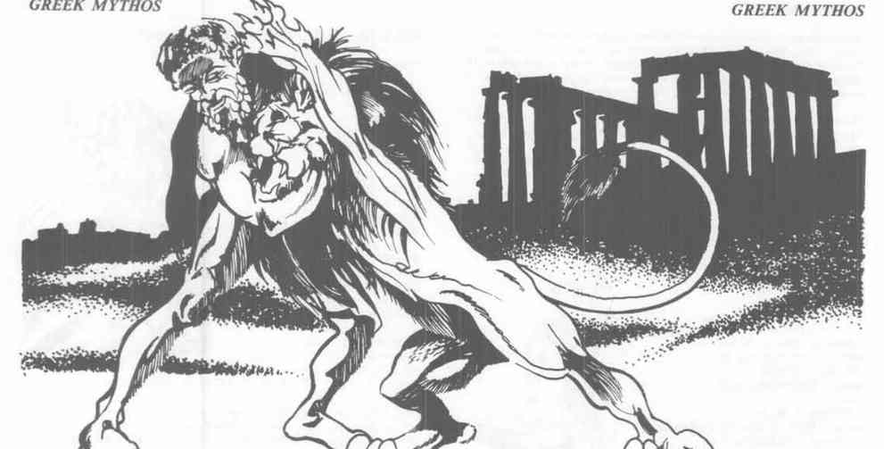
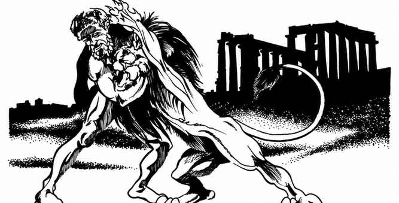

希腊神祇往往把个人荣誉、嫉妒和誓言看得比凡人的生命更重要；牧师必须依附固定神殿，神殿被亵渎后会失去高阶法术。
Ares、Artemis、Athena 与英雄
Ares（战神） 是混乱邪恶强大神，AC −2，333 点生命值，魔法抗性 59%；穿 +5 链甲，持 +3 长矛和 +5 长剑，能飞入战场并以魔法否定毒素与石化。Artemis（狩猎女神） 是中立弱等女神，AC 1，219 点生命值，持 +3 弓与 +2 箭，射程一千码；她不会伤害已经见过她的自然动物，并能反射对她施放的魔法。
Athena（智慧与战斗女神） 是守序善良强大神，AC −2，329 点生命值，魔法抗性 80%。她的长矛每击造成 5–50 点伤害且从不失手，头盔能随意形成反魔法外壳；她的祭司积极传播信仰，尤其敌视 Ares 的祭司。
Bellerophon 是守序善良英雄，骑 Pegasus 击败 Chimera 与其他魔法怪物；Achilles 已在前批录入。Heracles（赫拉克勒斯） 以巨力和十二项功业闻名，穿 Nemean 狮皮，锐器通常只能造成一半伤害，遭羞辱时会陷入不分敌我的狂暴。
Atlas、Cerberus、Circe 与巨人
Atlas（阿特拉斯） 是混乱邪恶强大神，AC −3，350 点生命值，魔法抗性 95%；在主物质位面拥有几乎不可抗拒的巨力，能举起或弯折任何物体。Cerberus（刻耳柏洛斯） 是 Hades 门卫，三头巨犬；每个头有 30 点生命值，中央头的毒息接触即死，三头的凝视每轮可将凡人石化。
Circe（喀耳刻） 是黑暗女巫，擅长把人类变成动物，拥有各种变形法术、魔杖和药剂；她曾把 Odysseus 的船员变成猪，并能以预言帮助或误导凡人。Cyclops 是独眼巨人，常以巨石投掷作战；Hecatoncheire 有百臂，能同时投掷或挥舞大量武器，是反抗 Olympus 的远古巨人。
Demeter、Dionysus、Hades、Hera 与 Hephaestus
Demeter（农业女神） 掌管土地与收成，忽视职责时大地会枯萎；Dionysus（酒与狂欢之神） 驾豹车，能用 thyrsus 使人疯狂或将植物瞬间成长。Hades（死者之王） 以黑色战车和梦魇作战，拥有让凡人忘记身份、成为其侍从的力量。
Hera（婚姻与阴谋女神） 会严厉惩罚违背婚姻与誓言者；Hephaestus（火与锻造之神） 是唯一能轻松加工最坚硬金属的神匠，使用九英尺战锤，每击造成 20–80 点伤害。Hermes（盗贼、骗子、赌徒与仲裁者之神） 佩戴飞翼凉鞋与隐形头盔，持 Caduceus，负责在诸神与凡人之间传递消息并仲裁争端。
Jason、Kronos、Oceanus、Pan、Poseidon、Prometheus 与 Theseus
Jason 是中立善良英雄，率领 Argonauts 取得金羊毛；金羊毛能瞬间治愈伤口，并有机会复活三日内死亡者，但每次使用都有消失的风险。Kronos 是被 Olympus 推翻的前任神王与泰坦；Oceanus 统治海洋与水域。
Pan（自然与野性激情之神） 以羊腿和羊角的人形出现，声音能造成恐惧，长笛会令未通过豁免者疯狂爱上他。Poseidon（海、河流与大地之神） 持 +5 三叉戟，能制造地震、海啸并召来海怪。Prometheus 偷火赐予人类，因而被锁在山巅受鹰啄食；他仍保护凡人，并能用黏土在两轮内创造一个为牧师服务的凡人。Theseus 是守序善良英雄，曾击败最强的 Minotaur，擅长识破敌人的魔法与非魔法弱点。Tyche（幸运女神） 可施放“好运”，并用蓝色球体吸收一次攻击后反射全部伤害。

